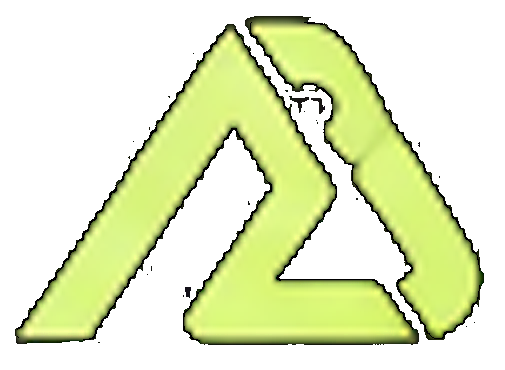

01 / 03 DIGITAL PLATFORMSELECTED WORK

We build brand identities, websites, product interfaces, and launch assets with classic design judgment and modern AI-assisted speed.


Turn an early idea or a complex product into a clear plan, intuitive flows, and a prototype your team can move forward with.
Discuss this service ↗Responsive websites and web platforms that make your offer clear and your workflows easier to use.
Discuss this service ↗Mobile experiences designed for day-to-day use and built for dependable performance.
Discuss this service ↗Reliable APIs, data systems, and cloud infrastructure shaped around your product’s needs.
Discuss this service ↗Connect product experiences to the services and data that power them.
Discuss this service ↗Plan robust data and cloud foundations for products that need dependable performance.
Discuss this service ↗Practical improvements, maintenance, and technical guidance as your product grows.
Discuss this service ↗We align on goals, people, constraints, and a shared definition of success.
We shape the key journeys and technical approach before committing to the build.
Focused development rounds, regular demos, and room to refine what matters.
We test, launch, and hand over the knowledge your team needs to keep moving.
Work with the people making the decisions and building the product.
Know the scope, priorities, and next milestone throughout the project.
Use the right tools for your product instead of adding complexity for its own sake.
Thoughtful details, readable interfaces, and a handoff your team can use.
Make decisions around everyday needs, accessibility, and maintainability.
See progress in regular reviews, with space to respond and refine.
Good technology should make the complicated feel clear, and the important feel effortless.
We believe the best work comes from listening carefully, thinking clearly, and building together.

ArtisticBits ConsultancyOur approach to every projectWe work on websites, web applications, mobile apps, and backend systems. Share what you have in mind and we can discuss the best fit.
Timing depends on the scope. We agree on milestones and a practical schedule before development begins.
Yes. We can collaborate with your in-house product, design, or engineering team and align on a shared workflow.
We can provide a clear handoff and discuss ongoing support or future improvements based on what your product needs.